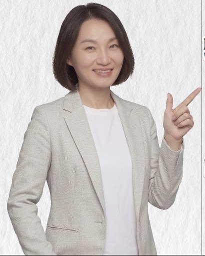
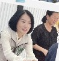
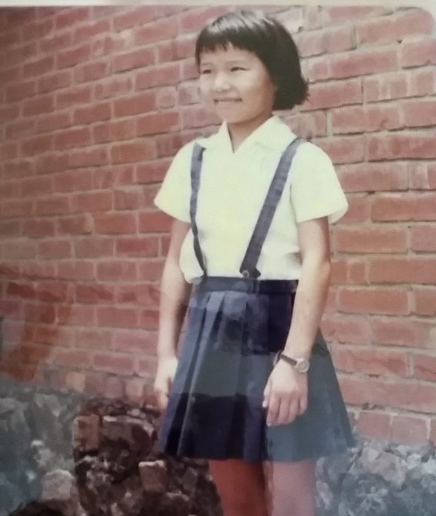
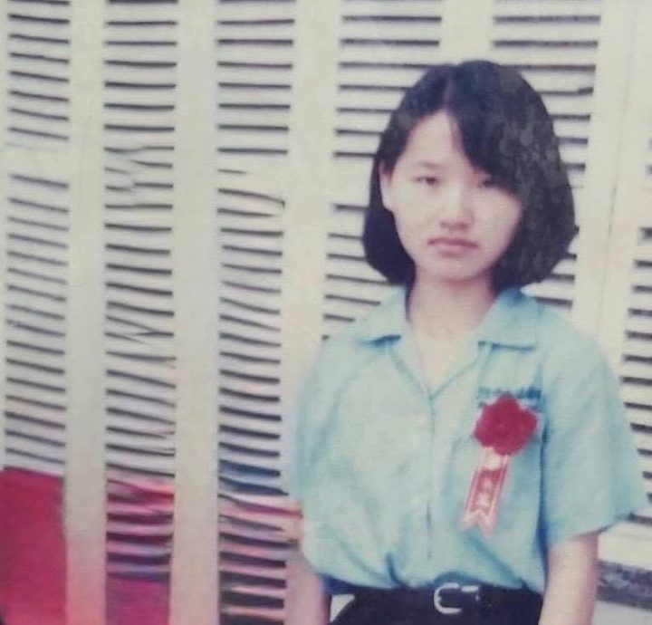
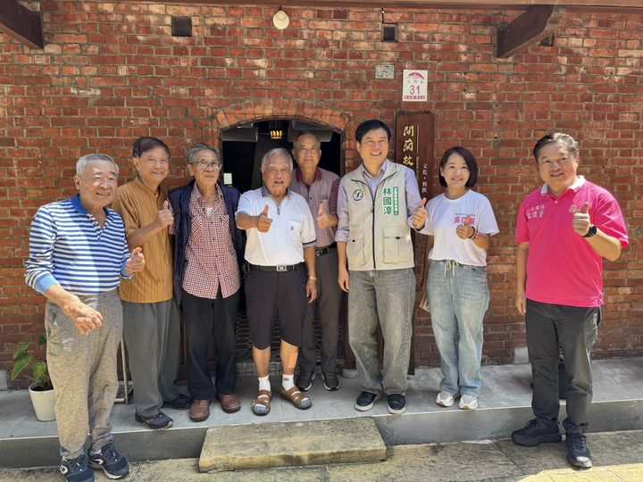
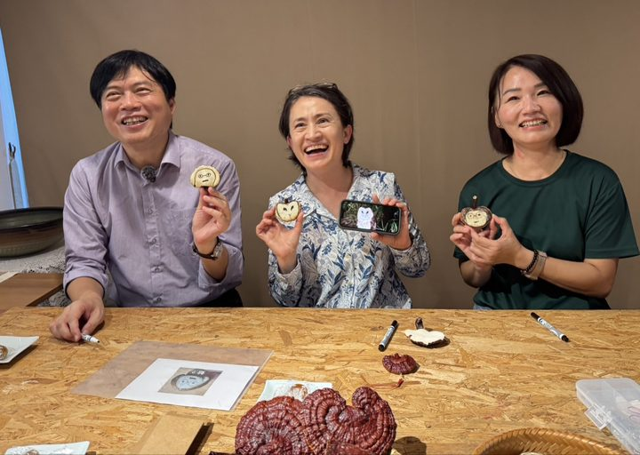
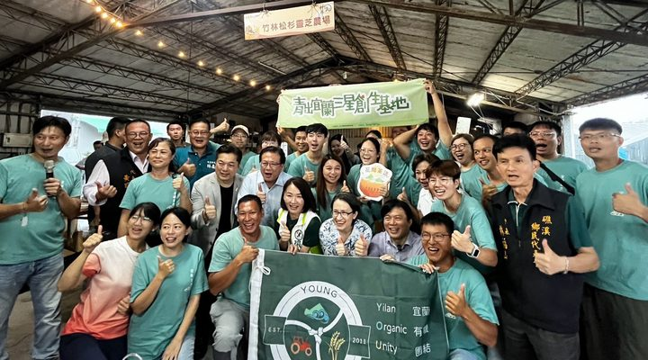

延長幼兒津貼每月3,600元至3歲，三年最高129,600元，減輕年輕家庭育兒負擔。
增設公共托育服務，提升0～2歲托育量能，讓爸媽有更多平價、安心的托育選擇。
生育補助每胎再增加10,000元，從孩子出生開始，給家庭最直接的支持。
設立親子共融遊樂場或親子活動空間，讓孩子有地成長。
除了中央政府最快明年每月 5,000 元的成長津貼，0～3 歲再由礁溪鄉公所加碼每月 3,600 元，三年共 129,600 元的幼兒營養津貼。礁溪稅收日增，希望把成果回饋給幼兒與長者。
調整孩子數與月齡，看看幼兒津貼加上生育加碼的累計金額。
試算僅計入本政見之津貼與加碼金額，不含現行中央及縣府其他補助；實際以正式公告為準。
切換看看托育名額翻倍是什麼樣子（示意）。
推動智慧接駁及自行車站點，增加居民與遊客的交通選擇，降低市區交通壓力。
改善停車空間配置，讓觀光車流適度外移，減少大量車輛集中進入市區。
重新檢視交通熱區與道路動線，整合相關單位做好假日及觀光尖峰時段交通疏導。
推動於191縣道增設國道客運第二上下客點，讓鄉親搭車更方便，分散市區車流、減輕交通壓力。
串聯步行、自行車及大眾運輸系統，讓短程移動有更多選擇，也讓市區交通更順暢。
礁溪共有八個平交道，市區的平交道又都緊鄰主要道路，火車經過時常造成嚴重回堵。亞蓁將配合縣府及在地立委，運用自己在立法院的經歷與人脈，加速鐵路高架興建。
拖動滑桿蓋樓層，看看車位怎麼增加（示意）。
點選項目，看看它要解決什麼問題。
以溫泉為核心、山林為特色、湖泊為亮點、農村為底蘊，打造一年四季都值得造訪的礁溪。
依照各村不同特色，發展多元觀光，讓山、河、湖、溫泉與農村共同發展，讓觀光商機不只集中在市區。
串聯五峰旗瀑布、抹茶山、跑馬古道、龍潭湖等特色景點，發展更完整的山林旅遊路線。
結合擁有兩百多年歷史的二龍競渡、水域遊憩與地方文化，讓二龍河成為礁溪重要的文化觀光品牌。
串聯景點、農村及地方特色產業，發展自行車慢遊，讓遊客用不同方式認識礁溪。
整合旅宿、餐飲、伴手禮、農村體驗及地方特色產業，並串聯宜蘭其他鄉鎮景點，讓一日遊變成二日、三日深度旅行。
推動社區共同參與環境綠化，讓十八村一起變美，提升居民生活品質，也讓礁溪更有觀光魅力。
礁溪是宜蘭的門戶，除了全台唯一的平地溫泉，更要發展各村多元特色，並結合觀光、旅宿業者規劃套裝行程，讓旅客留在礁溪消費。
點選想體驗的項目（或按上方四大主題快速挑選），看看你會在礁溪住幾晚。
行程為示意，用來說明套裝旅遊如何整合旅宿、餐飲、伴手禮與農村體驗。
礁溪十八村，各有自己的風景與人情。社區一起參與，觀光才走得長久。
從土地使用、公共設施、交通、生活機能及綠地等面向，重新思考礁溪未來發展，讓建設不再零零散散。
推動加速白雲、奇立丹擴大都市計畫，為地方發展打開新的空間。
改善市區人行道及步行環境，讓長輩、孩子、居民與遊客，都能更安全、更舒服地走在礁溪。
編列預算，交由專家提出礁溪的都市整體規劃，再交由在地委員會審查，據此擬定都市計畫提報縣府及中央。整體規劃須包含市場、停車場、主要道路貫通、生命紀念園區等主要建設。
往右拖，看公共建設一項項到位，連地底下的污水下水道也一起鋪好（示意）。
輔導社區提升照顧量能，推動一村一共餐，讓長輩吃得健康、有人陪伴，也讓子女安心上班。
活用閒置公共空間，整合長照資源，增加日照中心據點，讓照顧服務走進社區。
整合社福及長照服務資訊，提供申請、諮詢與轉介協助，讓長輩及家屬不用四處奔波。
持續推動社區活動及設施建置，提升社區照顧與服務量能，讓長輩在熟悉的地方安心生活。
推動一村一共餐，並為行動不便的獨居長者送餐，讓長輩在地安老。
選一個需求，看看「社福宅急便」怎麼幫你送到對的地方。
家人不用再到處跑、到處問。
每個村都有共餐的據點，長輩不再一個人吃飯；行動不便的獨居長者，由專人送餐到家。

編列農業支持經費，配合相關單位補助農民購買農業資材，每人每年最高5,000元，減輕生產負擔。
結合農會與在地農友，推動農村體驗旅遊、農產市集及農特產活動，增加農產品曝光，也增加農民收入。
結合農會、農改場的專業資源，輔導農民在稻米休耕期間種植適合的觀光作物，增加土地利用與農村景觀價值。
整合中央、縣府及農會資源，協助青農建立品牌、強化行銷、拓展通路，讓礁溪好的農產品不只種得好，也能賣得好。
建立固定、順暢的青農溝通管道，定期聽取第一線需求，讓需要的資源真正接得到農民。
讓遊客走進農村、認識農民、了解農產品，讓農業不只是生產，也成為礁溪觀光的一部分。
結合溫泉、農村體驗、農產品與食農教育，發展具有礁溪特色的農遊行程。讓遊客來礁溪，不只泡溫泉，也願意走進農村、認識農民，把礁溪的好農產帶回家。
點選每一站，看看在這個環節能做什麼。
結合二龍河活化與兩百多年二龍競渡文化，讓這項全臺獨特的傳統被更多人看見、走得更長久。
讓既有文化活動更有內容、更有特色，結合社區參與，讓文化真正走進地方。
結合礁溪的文化、農業及觀光特色，發展具有地方辨識度的活動與節慶，增加不同季節的觀光亮點。
增加地方文化、藝術及社區活動使用的展演空間，讓在地團體有更多舞台，也讓礁溪的文化被更多人看見。
點星星，看看一座公共澡堂可以怎麼升級（示意）。
溫泉不只是觀光資源，更是礁溪人的日常。傳承二龍競渡、發展特色節慶、活化閒置空間成為展演場域，讓在地文化成為遊客專程來看的理由。
把地方治水與環境需求帶進治理計畫，全力推動得子口溪整治，改善防洪安全與水岸環境。
推動二龍河水環境改善，同時結合二龍競渡、水域活動及觀光發展，讓治水與地方發展一起做。
針對小礁溪、大礁溪等河川，持續推動整治與環境改善，提升防洪安全及生活環境品質。
調整雨量，比較整治前後的河道（示意）。
整治不只是加高堤防：拓寬河道、強化排水，再把河岸做成可以散步、騎車的親水空間，讓河川從威脅變成風景。
依照各村實際需求，持續推動社區活動及設施建置，讓公共資源真正走進居民生活。
鼓勵社區共同參與環境綠化，從自己的村、自己的生活環境開始，讓礁溪處處都有綠意。
從各村的山林、河川、農業、文化與地方特色出發，發展不同的觀光與社區亮點，讓十八村都有發展機會。
亞蓁是土生土長的礁溪人，小學念四結國小、國中念吳沙國中、高中就讀蘭陽女中。畢業後，和許多宜蘭囝仔一樣，離開家鄉到台北讀大學、找工作。我常說：「宜蘭的小孩，離鄉是無奈，返家是期待。」
大學畢業後，我投入政治與公共事務工作，從基層助理、媒體記者做起，後來擔任立法委員張宏陸的辦公室主任，也曾擔任蔡英文總統、游錫堃院長的核心競選幹部，在公共事務領域累積了近三十年的經驗。
世界正在快速改變，從網路科技到人工智慧（AI）的發展，正帶領我們邁向全新的時代。對礁溪而言，這次鄉長選舉，也是決定礁溪未來發展方向的關鍵選舉。
礁溪是宜蘭的觀光門戶，擁有珍貴的平地碳酸氫鈉溫泉、壯闊的瀑布，以及綠意盎然的山林步道，具備得天獨厚的觀光資源。然而，長期以來，交通規劃、污水下水道及相關公共設施，仍缺乏完善的配套與整體規劃。唯有把基礎建設做好，才能讓礁溪的經濟發展在地扎根，帶動觀光產業持續升級。
礁溪的發展，更不能只侷限在溫泉區。我希望結合十八村各自的特色，串聯地方的農業、文化、生態與觀光資源，讓旅客願意多停留一天、多住一晚，讓礁溪成為一年四季都值得造訪的觀光勝地，也讓十八村共享觀光發展帶來的經濟成果。
這次回到家鄉參選，我希望將近三十年累積的專業與經驗，真正用在礁溪這片土地上。以最柔軟的身段溝通協調，積極爭取中央資源與建設經費；以最堅定的決心、最有效率的行政執行力，推動地方建設，讓礁溪大進步、大發展。
宜蘭的小孩，離鄉是無奈，返家是期待。
我期待有一天，離鄉打拚的宜蘭囝仔，都能有機會回到從小成長的家鄉，在熟悉的土地上安居樂業，找到屬於自己的未來。





台灣第一位女總統，為您推薦礁溪未來第一位女鄉長。讓最年輕、最有能力的礁溪女兒亞蓁承擔責任，帶領溫泉鄉走向新格局，打造世代共榮的幸福家園。
就像我熱愛台灣這片土地，亞蓁也帶著溫暖、堅韌的女性視野返鄉打拚，我相信她能有最在地的發展擘劃，解決問題、爭取資源，讓礁溪發展大邁進。
亞蓁兼具厚實的中央行政幕僚經驗與女性柔軟的協調特質，讓我們中央跟地方連一線，一起來顧好礁溪的好未來。
我確信亞蓁和我一樣「溫暖、創新、會做事」！期待這位『衝衝衝』的好夥伴帶領礁溪建設大邁步。
屏東有首位女縣長的光榮前行，我相信礁溪也值得擁有一位專職、專業的女鄉長來點亮礁溪！
專職專業，顧礁溪！歡迎以匯款方式支持。